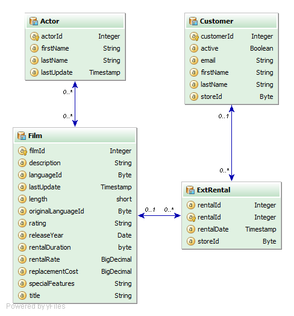
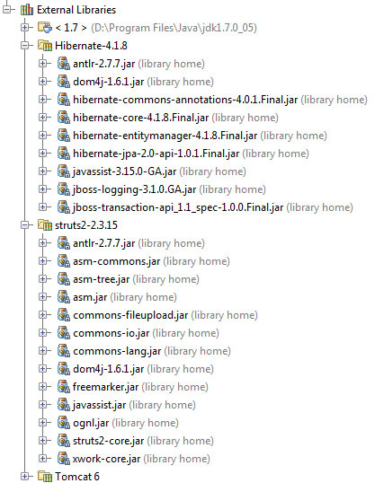

Sull'utilità del progetto c'è poco da dire: ha scopo puramente dimostrativo e permette di navigare attraverso le entità del database seguendo le sue relazioni. Le entità coinvolte sono: Attori, Film, Noleggi e Clienti, le relazioni permettono di filtrare gli attori di un film paritcolare, i film interpretati da un attore, le operazioni di noleggio su un determinato film e i noleggi di un determinato cliente.
Tecnologie Hibernate Hibernate è una piattaforma middleware open source per lo sviluppo di applicazioni Java, che fornisce un servizio di Object-relational mapping (ORM) ovvero gestisce la persistenza dei dati sul database attraverso la rappresentazione e il mantenimento su database relazionale di un sistema di oggetti Java.
Hibernate è stato originariamente sviluppato da un team internazionale di programmatori volontari coordinati da Gavin King; in seguito il progetto è stato proseguito sotto l'egida di JBoss, che ne ha curato la standardizzazione rispetto alle specifiche JPA in ambito Java EE. (Wikipedia)
Sito ufficiale di Hibernate nella JBoss community:
http://www.hibernate.org/?
Alcune fonti introduttive in italiano su Hibernate:
http://www.html.it/articoli/introduzione-ad-hibernate/
http://www.javahelp.it/index.php?introduzione-ad-hibernate
Struts 2
Apache Struts è un progetto open source sponsorizzato dalla Apache Software Foundation ed è l’implementazione Java server-side del design pattern MVC (Model View Controller).
Il progetto Struts è nato con l’intenzione di implementare un framework open-source per la creazione di applicazioni web che
permettesse la separazione del livello di presentazione e che fosse, allo stesso tempo, astratto dai vari livelli di dato
e dalle transizioni.http://www.hibernate.org/?
Alcune fonti introduttive in italiano su Hibernate:
http://www.html.it/articoli/introduzione-ad-hibernate/
http://www.javahelp.it/index.php?introduzione-ad-hibernate
La versione 2 di Struts risulta profondamente rinnovata rispetto alla precedente. In realtà il progetto è nato con il nome di WebWork, che non ha nessun legame particolare con la versione 1 di Struts, per poi passare, dopo una prima fase di analisi e sviluppo, al nome Struts 2. (HTML.it)
Sito ufficiale di Hibernate nella JBoss community:
http://struts.apache.org/?
Introduzione a Struts su HTML.it:
http://www.html.it/articoli/introduzione-ad-apache-struts-1/
http://www.html.it/articoli/introduzione-a-struts-2-1//
MySql
MySQL, ad oggi è uno dei più diffusi Relational database management system (RDBMS).http://struts.apache.org/?
Introduzione a Struts su HTML.it:
http://www.html.it/articoli/introduzione-ad-apache-struts-1/
http://www.html.it/articoli/introduzione-a-struts-2-1//
MySQL è una scelta comune nello sviluppo di web application ed è un componente fondamentale della cosiddetta LAMP, acronimo che sta ad indicare il più diffuso framework open source utilizzato in ambito web ("Linux, Apache, MySQL, Perl/PHP/Python.").(Wikipedia)
Sito ufficiale MySql :
http://www.mysql.com?
Fonti introduttive a MySql:
http://www.html.it/pag/32138/download-e-installazione-di-mysql/
http://www.baravalle.it/articoli/4
Google Cloud Platform
Google Cloud Platform (GCP) è la piattaforma integrata di servizi cloud proposta da Google.http://www.mysql.com?
Fonti introduttive a MySql:
http://www.html.it/pag/32138/download-e-installazione-di-mysql/
http://www.baravalle.it/articoli/4
Nell'ambito di GCP Google App Engine è l'application server che permette l’hosting di applicazioni Java, Python, Go e PHP. In pratica permette di sviluppare, testare, implementare e gestire le applicazioni web senza i costi e la complessità associati all'acquisto, la configurazione, l'ottimizzazione e la gestione dell'hardware e del software di base.
Sempre nell'ambito di GCP Google Cloud SQL è il servizio che permette di utilizzare database relazionali all'interno delle nostre applicazioni cloud, direttamente derivato da MySQL.
I servizi di GCP sono forniti in modalità PaaS (Platform as a service), in genere è disponibile un accesso base gratuito per volumi limitati di traffico/storage/computazione che permette di sperimentare facilmente senza spese iniziali.
Home page di Google App Engine e Google Cloud SQL:
https://developers.google.com/appengine/
https://developers.google.com/cloud-sql/
Pagina di Google Cloud Platform su Google+:
https://plus.google.com/u/0/+googlecloudplatform/
Realizzazione
Questo non vuole essere un tutorial dettagliato ma una semplice veduta d'insieme di come sono state usate le tecnologie illustrate
nella realizzazione del progetto. Strumento di sviluppo principale è stato Intellij Idea, una IDE Java commerciale disponibile
in versione "community" sotto licenza Apache2.https://developers.google.com/appengine/
https://developers.google.com/cloud-sql/
Pagina di Google Cloud Platform su Google+:
https://plus.google.com/u/0/+googlecloudplatform/
Database Il database a cui fa riferimento l'applicazione è una parte del DB Sakila, utilizzato spesso per scopi dimostrativi con MySQL.
Il mapping tra le tabelle e le classi Java è stato realizzato tramite annotations, secondo lo standard previsto da JPA. Ad esempio la classe Actor viene annotata in questo modo.
La struttura comprende 4 entità: Film, Attori, Noleggi e clienti e le seguenti relazioni che li legano:
Film <-> Attore (n .. n)
Film <--> Noleggio ( 1 .. n)
Noleggio <--> Cliente (n .. 1)
Questo è il diagramma ER come appare nell'ambiente di persistenza di Intellij Idea:

Per semplificare le tabelle e relazioni necessarie è stata creata una vista "ExtRental" non disponibile nel db originale
che combina le due tabelle rental e inventory non usate direttamente nel progetto.Questa l'istruzione sql per creare la vista mancante:
CREATE VIEW `sakila`.`ext_rental` AS select rental.rental_id,rental.rental_date,rental.customer_id, inventory.film_id,inventory.store_id from sakila.rental inner join sakila.inventory on rental.inventory_id=inventory.inventory_id ;
Per utilizzare Struts2 su GAE è necessario inizializzare correttamente l'OgnlRuntime, in Hiberuts questo viene fatto nel ServletContextListener:
OgnlRuntime.setSecurityManager(null);Altra cosa importante è fornire il corretto driver per il database: su Google Cloud SQL il driver da usare è com.mysql.jdbc.GoogleDriver e l'url per la connessione è del tipo: jdbc:google:mysql://istanza/database.
Nella classe EMF ho aggiunto una condizione per poter caricare i giusti parametri di connessione nel caso in cui l'applicazione venga eseguita in un ambiente locale piuttosto che su GAE.
Infine, nonostante Google fornisca un completo SDK che permette di sviluppare le applicazioni per GAE su un server locale, per questo progetto particolare non sono riuscito a farlo funzionare correttamente per cui ho testato l'applicazione su un Tomcat 6.
Integrazione di Hibernate con GAE:
https://developers.google.com/appengine/articles/using_hibernate
Integrazione di Struts2 con GAE:
http://www.mkyong.com/google-app-engine/google-app-engine-struts-2-example/
Librerie
Al progetto vanno aggiunte le librerie di Struts2 e Hibernate, in particolare ho usato la versione 4.1.8 di Hibernate e la 2.3.15 di Struts.
Oltre a queste, per testare il programma in un ambiente locale, può servire il driver di MySQL.https://developers.google.com/appengine/articles/using_hibernate
Integrazione di Struts2 con GAE:
http://www.mkyong.com/google-app-engine/google-app-engine-struts-2-example/
Questo il dettaglio delle librerie che ho utilizzato nel progetto:

GitHub
Tutti i sorgenti e le risorse del progetto sono consultabili/scaricabili su GitHub:https://github.com/robertoDev/Hiberuts
Per chiarimenti, commenti, critiche(?) e complimenti... potete far riferimento al mio profilo Google+